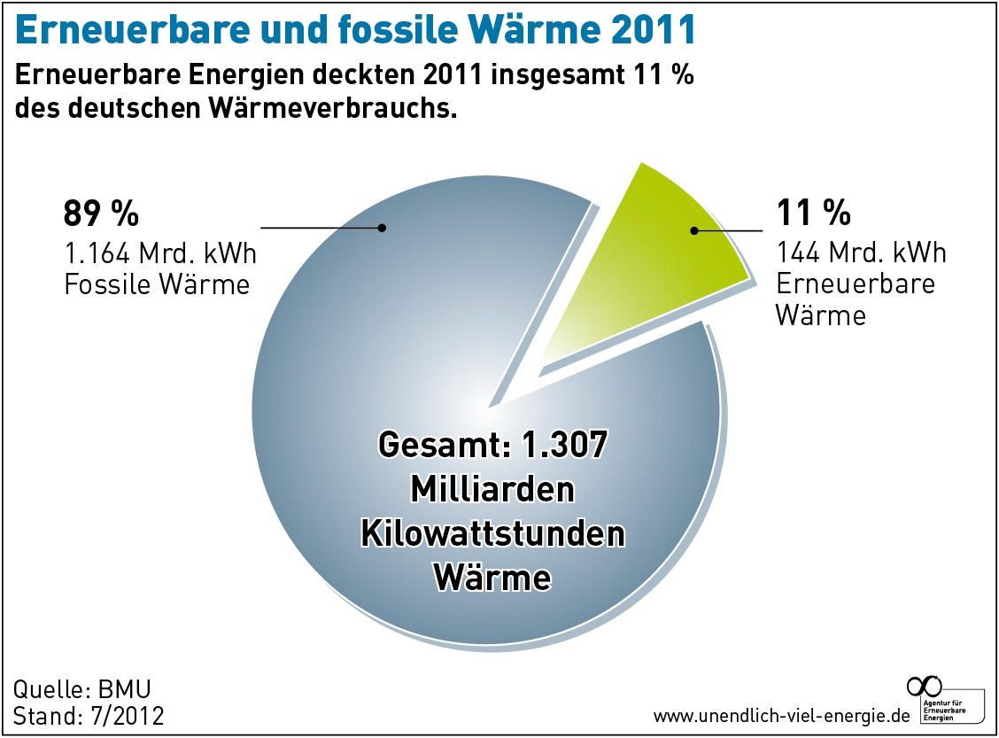
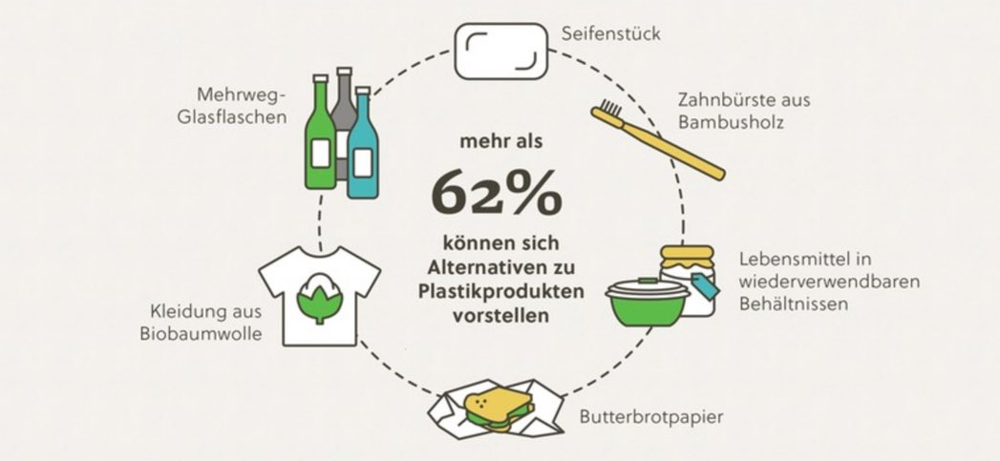

Alternativen
Alternativen zu alle dem gibt es und hier könnt ihr sie euch durchlesen:
Zu Fossilen Brennstoffen:
Natürlich gibt es schon Ökostrom der schon in hülle und fülle verwendet wird, aber es braucht mehr davon. Nuklar Reaktoren sind auch eine Sache die man in betracht ziehen sollte nur der Radioaktive abfall stört. Oder eine ganz neue sache wie Z.B. Fusionsreaktoren, die sehr viel Strom produzieren könnten. Sie sind aber noch in der Entwlickung und noch nicht ausgereift genug. Hier kann man noch sehen wie schlecht es eigenlich mit dem Ökostrom im Jahre 2011 stand: 
Zu Plastik Brennstoffen:
Wie schon erwähnt (Plastik) ist könnte man um Plastik bei der Herstellung von Getränke Flaschen zu ersetzen geformten Agar agar benutzen. Es gibt viele Möglichkeiten durch pflanzliche Mittel das Plastik zu erstetzen, aber es müsste genau so stabil und günstiger sein damit es für die großen hertseller lukartiv wird. Hier sind noch andere alternativen: 